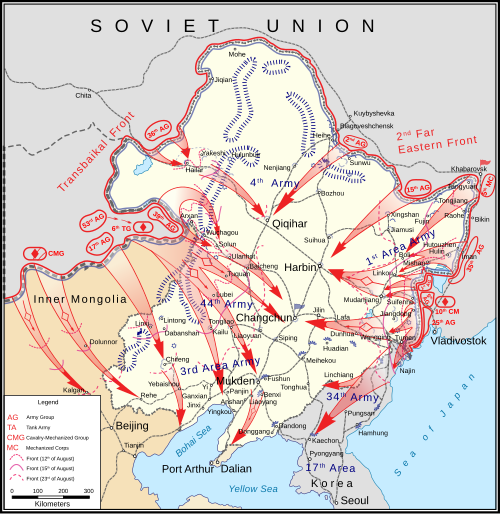
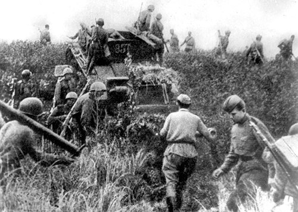
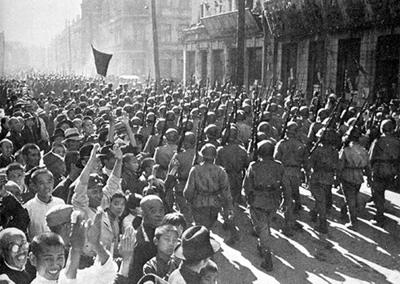

Date
August 9 – August 20, 1945
Location
Manchuria (China)
Result
Decisive Soviet Victory

Soviet gains in Northeast Asia, August 1945
Overview
The Soviet invasion of the Japanese puppet state of Manchukuo. It began precisely three months after the German surrender, as promised at Yalta.
| Faction | Commanders | Casualties |
|---|---|---|
| USSR | Vasilevsky | ~12,031 killed |
| Japan | Otozō Yamada | ~21,000 killed, 600,000 captured |
The Conflict
The Soviets employed a classic pincer movement over vast distances (desert and mountains). The veteran Soviet forces, hardened by the Eastern Front, crushed the depleted Japanese Kwantung Army.


Significance & Aftermath
- This operation is often cited as a major factor, alongside the atomic bombs, in Japan's decision to surrender.
- It also paved the way for the Communist victory in the Chinese Civil War.